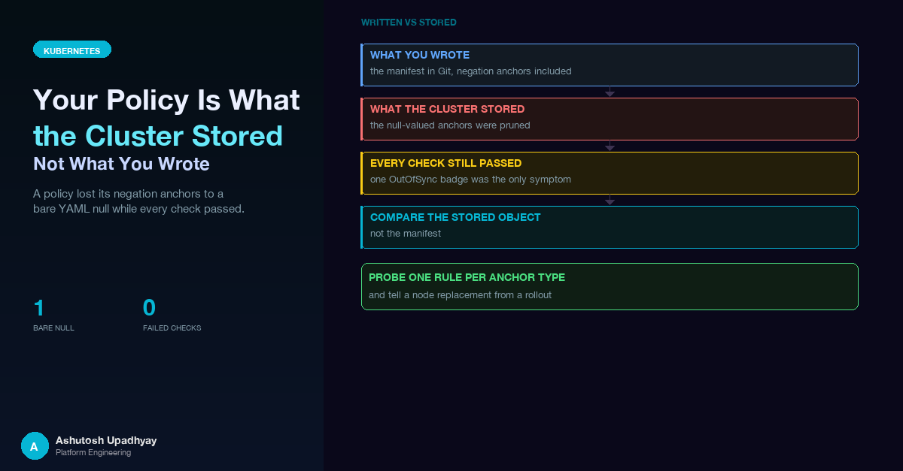

A Kyverno policy lost its negation anchors to a bare YAML null while every check passed. How to compare the stored object to Git, probe each rule kind, and tell a node replacement from a rollout.
The first deploy of a new admission policy went out and the GitOps dashboard was green, with one exception. Every other resource was Synced. The policy itself was OutOfSync, and it stayed that way.
The policy was meant to pin the shape of every Job that one service account could create. A server-side dry-run of the manifest had succeeded. The policy reported Ready. A probe Job running as root was denied, exactly as intended. By every check I had run, the policy was enforcing.
It was not. The cluster had stored a weaker policy than the one in Git. Its negation anchors, the rules that say a field must not exist, were gone, and the only visible symptom was that single OutOfSync badge.
This post is about that gap: the difference between the manifest you wrote and the object the API server actually stored. It also covers a second, unrelated incident from the same day, where "every pod restarted" turned out to describe something other than the deploy. Both come down to one habit: verify the stored or observed object, never the manifest you believe produced it.
The short version. A YAML null inside a custom resource can be pruned by the API server when the object is stored. In a Kyverno policy that silently deletes every negation anchor. The fix is a quoted string. The lesson is bigger than the fix: compare what the cluster stored to what Git says, and probe each kind of rule against the live admission path.
An API service needed permission to create Kubernetes Jobs so that long-running work could run outside the request path. Kubernetes RBAC can say who may create Jobs in a namespace. It cannot say anything about what is inside the pod spec of those Jobs. An account that can create Jobs can, as far as RBAC is concerned, create a Job that mounts a host path or runs as root.
The usual answer is admission control. A namespaced Kyverno Policy matches Job creation by that one service account and validates the pod template against a fixed pattern: values that must match, and fields that must be absent.
Two forms in Kyverno's pattern language matter here. A plain key must exist and match. A negation anchor, X(key), says the key must not exist at all.
The negation anchor is the one that bit. This is what I wrote, in generic form:
pattern:
spec:
template:
spec:
securityContext:
runAsNonRoot: true
X(volumes):An empty value in YAML is a null. It reads naturally: "the key volumes has no value". It is also wrong.
Custom resources are stored under a schema, and the Kubernetes documentation on CustomResourceDefinitions is explicit about nulls: for fields that do not declare themselves nullable, a null value is pruned before defaulting happens. As I read it, that matches what I saw. Kyverno's own documentation writes the negation anchor with the string "null", and that is the form that survives storage. A bare YAML null does not.
The policy I applied had several negation anchors. The policy the cluster stored had none of them. Every other rule in the pattern was intact. The policy was still valid. It was simply weaker.
That is the part worth sitting with. Validation checks that an object is well-formed, not that it still means what you meant. A policy with fewer rules is just as well-formed as one with all of them.
I had four independent signals that the policy worked, and none of them could see the problem.
| What I checked | Why it passed anyway |
|---|---|
| Server-side dry-run apply of the policy | The server accepted the pruned object. A policy with fewer rules is valid. |
| Controller reports the policy ready | Ready describes the policy resource, not whether it still contains every rule you wrote. |
| A probe Job running as root was denied | The root check is a plain key with a value, not a negation anchor. It survived pruning, so the probe proved nothing about the rules that were lost. |
| A unit test that built the expected Job and matched it against the policy file | It parsed the same Git file that held the nulls. A test that reads the manifest agrees with the manifest. |
The last row deserves a second look. The test re-implemented the anchor semantics and read the pattern from the policy file, which is a good way to keep the Job builder and the policy in step. But a negation check only asks whether the key is present in the Job, so it behaved identically whether the file said null or "null". It was a test that could not fail for this class of bug, a close cousin of the patterns in the post on tests that cannot fail.
The only signal that worked was the one nobody wrote a check for: Argo CD compared the manifest in Git with the live object and reported a difference. If your GitOps tool tells you one resource differs while everything around it is green, believe it before you believe your own probes. (The layout of those Applications is covered in the Argo CD post; here the point is only that the comparison caught what the tests could not.)
A pattern worth recognising. The same family of problem showed up on a different controller in the GPU-on-EKS post: a field the installed version of an operator's schema did not know was pruned at admission, with no error, and the resource looked healthy while a setting was simply gone. Schema pruning is quiet by design. Plan for it.
# Before: pruned when the policy object is stored
X(volumes):
# After: a string, which survives
X(volumes): "null"I changed every negation anchor to the quoted form. I also wrote out, explicitly, the default fields that Kyverno fills in on admission (the admission and background switches, the failure action and similar), so that the Git copy and the stored copy have the same shape and a comparison between them is not full of noise. Then it synced.
The sync was the easy part. The work was proving that it had worked.
A server-side dry-run with JSON output returns the object as the server would persist it, after pruning and defaulting. That is the object to compare against Git:
# What the server would store
kubectl apply --dry-run=server -f policy.yaml -o json \
| jq -S '.spec' > stored.json
# What I wrote
yq -o=json '.spec' policy.yaml | jq -S . > written.json
diff written.json stored.jsonOn the broken version, that diff would list every negation anchor as present on the left and absent on the right. On the fixed version, with the defaults written out, it should come back empty, and any lines left over are defaults you have not written out yet. A clean diff is the check I had been missing: it compares what I meant with what the cluster holds, not what I meant with what I meant.
The same idea belongs in the test suite, where it is cheap. I added a guard that loads the policy and fails if any value in the spec is a null, and also asserts that the number of negation anchors has not dropped below the number I wrote:
def walk(node, path=""):
if isinstance(node, dict):
for k, v in node.items():
yield from walk(v, f"{path}/{k}")
elif isinstance(node, list):
for i, v in enumerate(node):
yield from walk(v, f"{path}[{i}]")
else:
yield path, node
def test_policy_has_no_prunable_nulls():
spec = yaml.safe_load(POLICY.read_text())["spec"]
assert [p for p, v in walk(spec) if v is None] == []
anchors = [p for p, _ in walk(spec) if "/X(" in p]
assert len(anchors) >= EXPECTED_ANCHORSThe second assertion is the one that keeps the first honest. If someone deletes a negation anchor outright, "no nulls" still passes. A floor on the anchor count turns a silent deletion into a red test.
Two comparisons, two jobs. The static guard catches the known failure at review time, for free. The stored-versus-Git diff catches the failure you have not thought of yet, because it does not depend on knowing what went wrong. Keep both.
Comparing specs shows that the rules are stored. It does not show that they enforce. For that, send real requests through the real admission path, and make sure the probes cover each kind of rule, not just the one that is easiest to trip.
| Rule kind | Example in the pattern | Probe that must be denied |
|---|---|---|
| Required key with a value | runAsNonRoot: true |
The valid Job with that value flipped |
| Negation anchor | X(volumes): "null" |
The valid Job plus a hostPath volume |
The mechanics matter as much as the list. The probe is a copy of a Job the real code builds, with exactly one defect added. That way the only reason for a denial is the defect, and the baseline Job, unmodified, must be admitted. If the baseline is denied, every real Job is denied too, and you want to find that out before users do.
# 1. The unmodified, correctly shaped Job: must be ADMITTED
kubectl create --dry-run=server \
--as=system:serviceaccount:team-a:runner \
-n team-a -f good-job.json
# 2. Same Job, one defect (a host-path volume): must be DENIED,
# and the message must name the rule
kubectl create --dry-run=server \
--as=system:serviceaccount:team-a:runner \
-n team-a -f bad-job-hostpath.jsonTwo details in that snippet are load-bearing. First, the --as flag. The policy matches on the service account that creates the Job, so a probe sent as an administrator never matches the policy and sails through, which looks exactly like a policy that does nothing. Impersonate the account the policy is written for. Second, "must name the rule". A denial is only evidence for your policy if the message says your policy denied it.
After the fix, the real probes ran against the live cluster. The correctly shaped Job was admitted, and a probe with one forbidden field added (a hostPath volume) was denied by the policy. That is exactly the case the broken version would have let straight through: the plain-key rules survived pruning, so a root-user probe could never have told the two versions apart.
The tempting probe is the laziest one: a Job running a tiny public image. It is denied, which feels like a pass.
But the denial comes from a different admission controller. A separate image-source admission policy rejects images that do not come from the approved internal repository, and it rejects such a probe on that basis. The denial message comes from that policy, not from the policy under test, so the probe says nothing about whether the policy would have caught the Job.
The fix is a rule for designing probes in any cluster with more than one admission layer:
This is now a step in the release checklist (the release post covers how that list is kept honest), including an explicit instruction to probe a negation anchor, with a note on why.
The same day produced a second false alarm, and the cure was the same habit.
After the deploy, every pod in the namespace had a fresh start time. That included an authentication proxy and a side service, which a normal image bump does not touch. "Everything restarted" is the kind of observation that makes you suspect the deploy, a bad probe, or a crash loop.
Three things did not fit that story:
restartCount was 0. Containers had not crashed or been restarted in place.The explanation was in the cluster events. Karpenter had replaced four drifted nodes inside roughly four minutes. When Karpenter disrupts a node for drift, it provisions a replacement, then drains the old node, evicting the pods so their ReplicaSets recreate them elsewhere. Evicted and recreated pods look like a rolling restart if you only look at start times. A PodDisruptionBudget on each service kept at least one replica serving during the replacement.
| Question | Real rollout | Node replacement by Karpenter |
|---|---|---|
| Pod start time | New | New |
restartCount |
0 on new pods | 0 on new pods |
| ReplicaSet hash and creation time | New ReplicaSet, created when the deploy ran | No new ReplicaSet; pods are newer than the one that owns them |
| Touches workloads the release did not change | No | Yes, anything on the replaced nodes |
| Cluster events | Scaling events on the Deployment | Disruption events naming drifted nodes |
The triage is three reads: the ReplicaSet creation time and hash against the deploy, the restart counts, and the cluster events filtered for disruption. A start time alone says only that a pod is new. It does not say why.
The wrong conclusion here would have been expensive in a quiet way. Blaming the release for restarts it did not cause sends people hunting through application logs for a crash that never happened. And the right conclusion changes how you read a deploy window: a request in flight on a drained pod is cut when the termination grace period runs out, so a node replacement and a rollout can look alike to a user, even though only one of them came from your release.
These look like different incidents. One is a manifest that lost its meaning in storage. The other is a restart that did not come from the deploy. In both, the belief ("I applied a policy with extra rules", "the release restarted my pods") was formed from the input, and the evidence that contradicted it was sitting in the output.
| You believe | Look at instead |
|---|---|
| "The policy I wrote is the policy that is enforced" | The stored spec, from a server-side dry-run with JSON output, diffed against Git |
| "The policy denies bad Jobs" | A live request per rule kind, as the right identity, with the denial message naming your rule |
| "The dry-run succeeded, so it is applied correctly" | The returned object, not the exit code |
| "My test reads the policy and passes" | Whether the test could fail if the stored policy differed from the file |
| "Everything restarted, so the deploy did it" | ReplicaSet hash, restart counts and disruption events |
| "One resource is OutOfSync, probably noise" | A diff of that resource, before anything else |
A natural test corpus for a policy like this is a list of single-defect mutations of the known-good Job: add a hostPath volume, flip a security flag, and so on. The next step is to make that same list do double duty: run it in unit tests, and run it against the cluster after every sync of the policy.
The design is a post-sync hook that takes each mutation, sends it as a server-side dry-run as the target service account, and passes only if the denial names the expected rule. A final case sends the unmodified Job and expects admission. Because the list is shared, a new rule gets one new mutation and is checked both in review and against the real admission path. And because the hook asserts on the rule name in the denial message, it would also catch a second admission controller quietly taking over a denial that your policy should be producing.
null in a custom resource can be pruned on storage. For Kyverno negation anchors, write X(key): "null" as a string.Disclaimer: The views and opinions expressed in this post are my own and do not represent those of my employer or any organisation I am associated with.